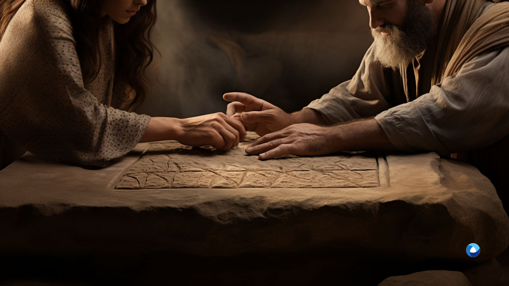
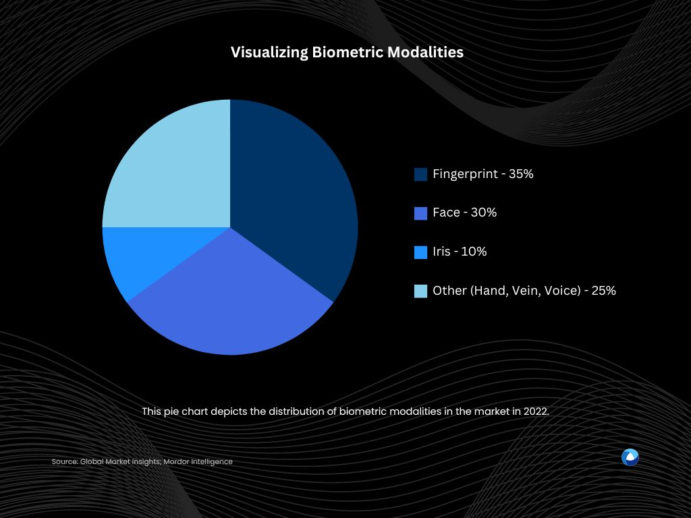

The Advantages of Biometric Verification — Enhancing Security

Introduction
In the modern world of data breaches and cyber threats, organizations continuously seek reliable authentication techniques to safeguard critical information. Biometric verification has emerged as an option for confirming an individual's identity, offering a secure and dependable method.
By utilizing unique physical and behavioural characteristics, biometric verification adds an additional layer of security against unauthorized access. This article explores the concept of biometric verification, presents examples of its application, and discusses the process of verifying and validating biometric data.
What is Biometric Verification?
The concept of using biometric identification dates back thousands of years. One of the earliest documented uses of biometrics for identification can be traced back to ancient Babylon, where fingerprints were used on clay tablets for business transactions and identification of government individuals. Babylonians would leave imprints of their fingerprints on clay tablets to sign legal contracts, marking one of the earliest forms of biometric identification.

Today's biometric verification is an advanced identification procedure that relies on an individual's distinctive physiological and behavioural traits to establish their identity.
Unlike traditional authentication methods like passwords or PINs, biometric authentication is significantly difficult to replicate, ensuring an unparalleled level of security. Based on the notion that each person possesses unique and irreplaceable characteristics, biometric authentication serves as an excellent option for businesses aiming to strengthen their security measures.
Examples of Biometric Verification
Biometric identification is carried out with the help of three main biometric modalities, which are: facial identification, iris identification, and fingerprint identification technology.
Fingerprint Identification:
Fingerprint identification stands as one of the oldest and most widely adopted biometric modalities. Leveraging the distinct patterns of ridges and furrows on an individual's fingertips, this technique offers exceptional accuracy and reliability. Its popularity arises from the uniqueness and permanence of fingerprints, making them a stable biometric trait throughout a person's life.
The process involves capturing an image of the fingerprint and analyzing minutiae points, which are the unique ridge characteristics. With its established track record in law enforcement and civilian applications, fingerprint identification remains a staple in biometric systems, ensuring secure and efficient identity verification.

In 1858, Sir William James Herschel conducted an intriguing experiment, using a handprint as a unique signature by having Rajyadhar Konai place his right hand on a contract for road building materials. The contract was accepted as valid, marking the first official use of biometric identification by a European. Using thumbprints on paper was a security measure to prevent denying the signature later: providing biometric data worked as a psychological deterrent from breaching the obligations, and this effect remains in place till date. Sir Herschel later collected thumbprints
This sparked Herschel's curiosity, leading him to collect fingerprints from himself and the others — to be sure they do not change over time. As he assumed the role of Magistrate and Collector at Hooghly in 1877, Herschel implemented fingerprint identification on a wider scale, managing the district criminal court, prison, registration of deeds, and payment of government pensions with this novel system.
Iris Identification:
Iris identification relies on the intricate and highly individualized patterns within the iris of the eye. The iris, which is the coloured part encircling the pupil, contains unique features that differentiate one person from another. Using specialized cameras, the system captures the iris pattern and extracts relevant data points for analysis.
The non-intrusive and contactless nature of iris scanning makes it user-friendly, while its high accuracy and resistance to tampering render it suitable for high-security applications.
Today, iris recognition technology is used to safeguard facilities such as nuclear power plants in the US, China, Japan, Germany, and Sweden. It is also used to provide safety and security at the CERN's Large Hadron Collider since 2007.
One innovative method of using iris identification is using the iris as a passport. Amidst the COVID-19 pandemic, the United Arab Emirates has deployed contactless technology to curb the virus's spread. One of these technologies was iris recognition technology. Тravellers can easily verify their identity without interaction when entering or leaving the country.
Facial Identification:
Facial identification, perhaps the most familiar biometric modality, relies on the distinct facial features that distinguish individuals from one another. This technique captures facial images through cameras and analyzes key facial landmarks, such as the distance between the eyes, nose, and mouth, to create a unique template.
Facial identification requires minimal cooperation from the subject and can be integrated into various devices like smartphones and surveillance systems. Although it may be sensitive to changes in lighting and pose variations, continuous advancements in facial recognition algorithms have improved its accuracy and made it indispensable in a wide array of applications, from unlocking smartphones to identifying suspects in criminal investigations.
Verifying Biometric Data
Ensuring the accuracy and efficacy of data requires rigorous testing and validation. The verification process includes several critical phases to guarantee the system's reliability and precision.
Data Gathering
The first step involves obtaining biometric data from the individual in question. Specialized biometric sensors, such as fingerprint scanners, iris scanners, or facial recognition cameras, can accomplish this. The technology records and securely maintains the unique biometric features in a database during data gathering.
Design of a Template
Through intricate algorithms, the recorded data is then transformed into a mathematical blueprint. This template, securely stored in the database, serves as a digital representation of the individual's biometric traits.
Comparison and Matching
When a person seeks verification, the biometric system collects new data and converts it into a template. The new template is then compared to the stored template to determine if there is a match. If the templates align within a set level of resemblance, the individual's identity is confirmed.
How is Biometric Authentication Done?
Biometric authentication involves two primary modes: verification and identification.
Verification
The individual's identification is validated against a system-stored template in this mode. When an employee uses their fingerprint to gain entry to a secure location, the system compares it to the template linked with their registered identification. The individual is granted access if the two templates match.
Identification
On the other hand, identification mode allows the system to search the full library of templates for a match. This is widely utilised in law enforcement applications where an unknown suspect's data is matched against a large database of potential matches.
Biometric authentication modalities of verification and identification both play important roles in creating a robust and sophisticated security framework for corporate environments and professional applications.
Traditional authentication methods simply cannot compete with the precision and dependability provided by biometric approaches. The seamless integration of biometric technologies into corporate infrastructures improves access control, increases data security, and strengthens the overall integrity of sensitive processes.
Advantages of Biometric Verification
Biometric authentication has numerous important advantages over traditional authentication techniques, making it an appealing option for corporations and institutions looking for solid security measures. Among the notable advantages are:
Enhanced Security
Biometric characteristics are nearly impossible to imitate, lowering the danger of identity theft and unauthorised access. Unlike passwords, which may be exchanged, forgotten, or stolen, biometric data is unique to each individual, reducing security vulnerabilities dramatically.
User Convenience
Biometric verification offers a seamless and user-friendly experience. Individuals do not need to memorize complex passwords or carry authentication tokens. With a simple scan or recognition process, users can swiftly gain access to secure systems and locations.
Increased Accuracy
The use of biometric traits ensures a high level of accuracy in confirming an individual's identity. False positives and false negatives are kept to a minimum, providing a reliable means of verification.
Scalability
Organisations of varied sizes and complexities might benefit from biometric verification solutions. Biometric solutions, whether for a small business or a big corporation, can be adapted to satisfy unique security requirements.
Audit Trail and Accountability
Biometric systems often come equipped with audit trails, providing a comprehensive record of all access attempts and verifications. This feature enhances accountability and aids investigations in case of security incidents.
Challenges and Considerations
While biometric verification offers significant advantages, it is essential to acknowledge and address potential challenges and considerations:
Privacy Concerns
Individuals are hesitant to disclose their biometric data for a variety of reasons. Concerns about hygiene and apprehension about being associated with criminal activities add to this negative attitude. People in conflict-torn areas may avoid providing biometrics in order to avoid potential persecution by authorities or unauthorised access to their data.
Biometric Spoofing
Although biometric traits are challenging to replicate, sophisticated attackers may attempt to spoof biometric systems using high-quality images or recordings. Biometric solutions need to incorporate anti-spoofing measures to mitigate this risk.
Cultural and Legal Considerations
In some cultures or jurisdictions, certain biometric traits may be considered invasive or objectionable. Organizations operating globally must respect local customs and comply with relevant laws.
False Rejection Rates
False rejection rates in biometric verification refer to the frequency with which the system incorrectly denies access to an authorized user. When individuals attempt to authenticate their identity, the system may mistakenly fail to recognize them as valid users, leading to a frustrating user experience. This occurrence can be triggered by various factors, such as variations in biometric data due to environmental conditions, sensor quality, or changes in a person's appearance over time.
Reducing the false rejection rate is crucial to avoid inconveniences and ensure smooth and efficient authentication processes. However, lowering this rate often comes at the cost of an increased risk of false acceptances, where unauthorized individuals may gain access. Hence, striking a balance between minimizing false rejections and maintaining security levels is essential in implementing biometric verification effectively.
False Acceptance Rates
False acceptance rates in biometric verification pertain to the likelihood of the system incorrectly granting access to an unauthorized individual. This poses a significant security concern as it may result in unauthorized access to sensitive information or restricted areas.
The false acceptance rate is influenced by factors such as the quality of biometric data, the effectiveness of the matching algorithm, and potential vulnerabilities in the system. Achieving a balance between false rejection rates and false acceptance rates is crucial when it comes to delivering an error-free systems.

An example of risks coming true
As the Taliban swiftly took control of Afghanistan in August 2021, concerns arose about the capture of US military biometric devices, known as HIIDE, used to gather sensitive data like iris scans, fingerprints, and facial images.
A great threat was in Afghan government databases, particularly APPS, a US-funded system containing comprehensive data on half a million members of the Afghan National Army and Police. This data included personal information, biometric profiles, military history, and familial relationships, making individuals susceptible to reprisals.
While the Taliban claimed they wouldn't target previous government or coalition workers, their actions have contradicted these assurances. The risks associated with the collection of biometric data in Afghanistan underscore the importance of securing such sensitive information.
The Future in Biometric Verification
As of 2021, the biometrics system market size was valued at USD 29.09 billion. According to Fortune Business Insights, the global market is expected to grow substantially, reaching USD 76.70 billion by 2029, with a Compound Annual Growth Rate (CAGR) of 13.9% during the forecast period from 2022 to 2029.
The dominant modality in the biometrics system is fingerprint technology, accounting for approximately 35% of the total market in 2021. Following closely are face and iris recognition, with market shares of approximately 30% and 10%, respectively. Other modalities, such as voice, palm, and vein recognition, have relatively lower market shares.

As technology continues to evolve, biometric verification is likely to see significant advancements. Some potential future developments in the field include:
Continuous Authentication
Rather than a one-time verification, continuous authentication analyzes users' behaviour continuously to ensure ongoing security during their session. This adaptive approach can detect anomalies and potential security threats in real time.
Biometric Encryption
Advanced encryption techniques applied to biometric templates can ensure that even if the data is compromised, it remains useless to unauthorized individuals. As biometric verification continues to evolve, organizations can expect to witness further advancements and innovations in this field.
Improved Accuracy and Speed
Advancements in biometric technology and algorithms will likely lead to even higher levels of accuracy and faster verification processes. As hardware and software become more sophisticated, the time required for biometric authentication could be significantly reduced, enhancing user experience and productivity.
Behavioral Biometrics
In addition to physical traits, behavioural biometrics is an emerging area of interest. This approach involves analyzing an individual's unique behavioural patterns, such as typing speed, mouse movements, or even gait. Combining behavioural biometrics with traditional physical traits can further enhance the accuracy and security of biometric identification systems.
3D Facial Recognition
Traditional 2D facial recognition systems have shown vulnerabilities to spoofing attempts using photographs or videos. 3D facial recognition, using depth-sensing technology or infrared cameras, can provide more robust verification, as it captures the facial structure and contours, making it harder for fraudsters to replicate.
Biometrics in IoT Devices
As the Internet of Things (IoT) grows in popularity, including biometric verification in IoT devices can improve security and authentication processes. Biometrics can give an extra layer of security to IoT applications such as smart homes, connected autos, and wearable gadgets.
Conclusion
Biometric verification has proven to be a valuable method for enhancing security in various settings, including individuals, corporations, and institutions. By utilizing unique physical and behavioural attributes, biometric authentication offers a reliable way to confirm identities.
The advantages of biometric verification, such as improved security, user convenience, and accuracy, make it a compelling choice compared to traditional authentication methods.
Continuous research and development in biometric verification will likely lead to advancements in accuracy, speed, and versatility as technology progresses. While challenges related to privacy, spoofing, and implementation costs still exist, efforts to address these issues will further promote the adoption of biometric authentication technologies.
Unlock the power of biometrics with the help of our expert team! Reach out to us today, and let's level up your security with cutting-edge biometric technology and services!